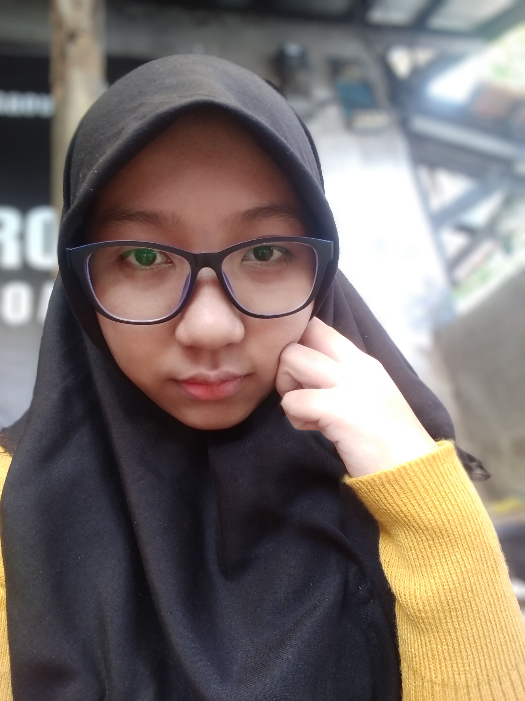

Halo, terima kasih telah berkunjung ke halaman biografi saya. Saya Nabilah Qurratunisa, biasa dipanggil Nana. Umur saya 20 tahun, dan lahir tgl 05 February 2001. Saya berkuliah di Universitas Pendidikan Indonesia jurusan Desain Komunikasi Visual (DKV). Di universitas tersebut saya sudah semester 7. Kesibukan saya sehari hari seperti mahasiswa pada umum nya yaitu belajar. Selain itu saya juga mengikuti kegiatan Study Independent di PT. Prograte. Pada waktu freetime saya suka melakukan hobi saya dan freelance atau volunteer di bidang kreatif (ilustrasi, design grafis, animasi). Untuk selengkapnya mengenai hobi, pengalaman, dan harapan saya, silahkan lanjut baca halaman di bawah ini.
ASPIRATION
Dari dulu kecil saya bercita cita ingin menjadi designer dan seiring berjalan nya waktu cita cita dan harapan saya tidak berubah. Saya juga mulai tertarik di bidang kreatif sejak kecil dan memiliki harapan untuk berkuliah di bidang design. Sekarang saya sudah berkuliah di jurusan DKV, saya mulai fokus dan merealisasikan harapan saya. Untuk tujuan yg terdekat, saya ingin lulus tepat waktu dan menerima beasiswa di bidang art design atau game design. Agar tujuan saya tercapai, saya mulai mencoba membuat beberapa mini project seperti membuat game atau membuat animasi atau project lainnya, walaupun ada project yg masih belum terealisasikan tapi saya sudah memiliki beberapa ide yg dapat dilakukan. Dari semua hal itu, harapan terbesar saya ialah saya ingin membahagiakan ibu saya dan tidak mengecewakan nya.
EXPERIENCE IN PROGATE
Pengalaman saya di Progate sangat menyenangkan. Apalagi dari awal saya sangat suka belajar hal baru dan saya juga memiliki ketertarikan belajar di bidang coding. Di Progate ini saya mempelajari banyak hal dari bahasa pemograman yg dasar seperti html hingga yg susah. Sistem pembelajaran nya juga cukup gampang dan mudah dipahami, apalagi dari website nya yg sudah terkonsep pembelajaran nya. Tujuan saya mengikuti program studi indenpenden ini selain untuk mempelajari hal baru, saya juga ingin membuat sebuah website pribadi yg berisikan portofolio saya dan ingin mempelajari cara membuat aplikasi.
.png)